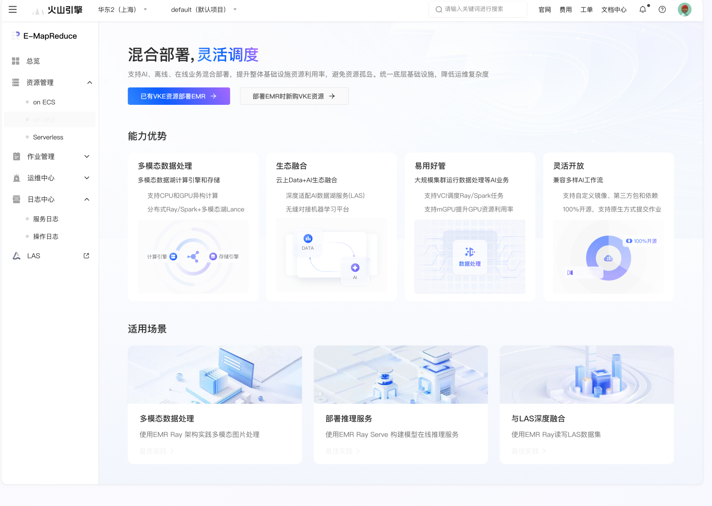

帮助理解与选择
让产品能力、适用场景和资源创建方式更容易判断。
SELF-SERVICE ONBOARDING
商业机会能否转化为真实使用，取决于用户能否理解产品、做出配置决策并顺利开始工作。这个项目把 AI 客户的上手障碍，拆解为资源开通前、中、后的连续体验。

AI 业务带来新的算力需求，但这类客户对引擎能力和资源配置概念的了解，与传统数据中台用户不同，在 EMR 资源开通和使用中遇到较多阻碍。
让产品能力、适用场景和资源创建方式更容易判断。
在关键配置项提供说明、可视化示意和操作指引。
在资源开通后提供下一步路径，帮助客户进入实际任务。
通过桌面研究、工单分析和产品周度沟通，快速建立业务理解，结合用户和商业目标识别关键阻力。
在 Landing 页区分已有资源部署与新购资源两类入口，说明能力优势、适用场景并连接最佳实践。
在资源创建页补充概念说明、图示和配置引导；开通后继续介绍能力与使用路径，并考虑权限诊断等阻塞场景。
形成资源开通前、中、后的引导方案
上线后的客户回访与效果数据仍需补充
原复盘记录项目受排期影响，后续上线效果有待验证。因此本页不将资源开通率、满意度或收入提升描述为已达成结果。
商业化设计应从客户的真实使用局限出发。清楚解释能力、帮助完成配置并衔接下一步，比单独增加一个引导入口更接近客户的任务目标。